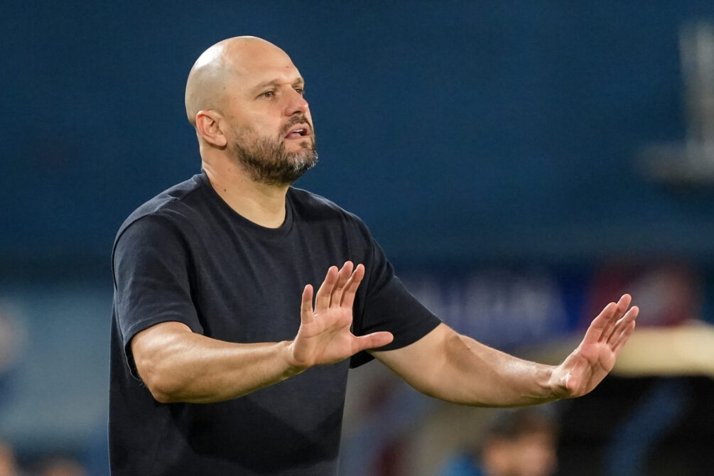

Se viste de rojo
Jadson Viera es el nuevo entrenador de Independiente: de campeón con Nacional a Avellaneda
El técnico uruguayo continuará su carrera en el fútbol argentino y asumirá el desafío de dirigir al conjunto de Avellaneda.
Fútbol internacional · 16 de agosto de 2026

Jadson Viera llegó a un acuerdo para convertirse en el nuevo entrenador de Independiente. El técnico de 45 años asumirá la conducción del plantel de Avellaneda, que busca mejorar su presente deportivo.
El uruguayo ocupará el lugar que dejó Gustavo Quinteros y firmará un contrato por un año con la institución argentina.
El entrenador, nacido en Brasil y naturalizado uruguayo, tendrá su primera experiencia como director técnico principal de un equipo argentino.
Viera conoce el fútbol de ese país por su etapa como jugador en Lanús. Posteriormente también trabajó como ayudante de Alexander Medina en Talleres y Vélez Sarsfield.
Su carrera como entrenador principal se desarrolló principalmente en Uruguay. Dirigió a Boston River y más tarde asumió la conducción de Nacional, club con el que logró consagrarse campeón.
Su trabajo en el fútbol uruguayo le permitió consolidar una propuesta basada en la intensidad, la organización del equipo y la búsqueda constante del arco rival.
Su idea de juego
Durante una entrevista con ESPN Uruguay, Viera explicó que pretende que sus equipos sean protagonistas y salgan a buscar los partidos, sin abandonar el orden cuando el rival tenga el control de la pelota.
El entrenador considera importante que sus futbolistas sepan interpretar los diferentes momentos del encuentro. Su intención es construir un equipo equilibrado, capaz de atacar y también de defender cuando la situación lo requiera.
Viera llegará a Independiente acompañado por un cuerpo técnico con presencia uruguaya. Fabián Rodríguez y Juan Manuel Olivera trabajarán como ayudantes, mientras que Guillermo Souto estará encargado de la preparación física.
El nuevo entrenador tendrá la misión de recuperar la confianza del plantel y devolverle al equipo una identidad competitiva.
Para Viera será uno de los desafíos más importantes de su carrera, luego de haber sido campeón con Nacional y construir buena parte de su recorrido profesional dentro del fútbol uruguayo.